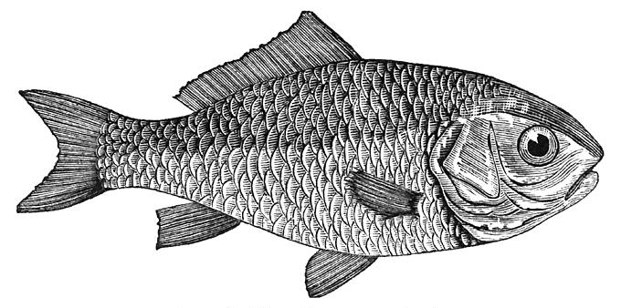

Beer-battered fish & Chips
Paired with a great Ale, this recipe will please even the pickiest pub crawler.
| Prep Time |
Cook Time |
Servings |
| 20 min |
20 min |
4 |
Ingredients
- 1 1/2 cups (375 mL) cold beer, preferably ale
- 2 cups (500 mL) all-purpose flour
- Salt and pepper to taste
- 8 cups (2 L) vegetable oil
- 3 lbs (1.5 kg) russet potatoes, peeled and sliced into 1⁄2 inch (1 cm) fries
- 1 1/2 (750 g) cod, halibut or
- haddock, skinned and deboned, cut into 8 equal-sized pieces
- Lemon wedges to garnish
- Malt vinegar
Instructions
- Slowly whisk beer into 1 1⁄2 cups (375 mL) flour until there are no lumps and they are well combined. Place the other 1⁄2 cup (125 mL) flour on a plate and season it with salt and pepper. Allow batter to rest for 1 hour at room temperature.
- Heat oil in a large pot over medium-high heat until a deep-fry thermometer registers 350°F (180°C). With a clean dish towel, pat fries dry of any moisture and add one third of potatoes to the pot, cook for 4 minutes or until they just start to turn golden. With a slotted metal spoon remove fries and place in a large metal or glass baking dish.
- Fry the rest of fries in the same way, in 2 more batches, making sure to allow the oil to return to 350°F (180°C) before starting the next batch. Place all blanched (parcooked) fries in the baking dish.
- Preheat oven to 200°F (100°C) and have a paper-towel-lined baking sheet ready for the fries.
- Increase the heat of the oil to 370°F (188°C). Carefully return all the fries into the pot and continue to cook them for a second time until they are crispy and golden. This may need to be done in 2 batches. Place cooked fries on prepared baking sheet and sprinkle generously with salt. Keep fries warm in preheated oven while cooking the fish.
- Season fish pieces generously with salt and pepper. Dredge fish in reserved flour, shaking off excess. While holding the tip of the fish with dry tongs or a fork, dip it into beer batter and coat well. Carefully place the fish into the hot oil and cook until golden, about 2 to 3 minutes each side. Fry 4 pieces at a time, bringing the oil back to proper heat before adding the second batch of fish.
- Sprinkle cooked fish with salt and serve with fries, lemon wedges, malt vinegar and tartar sauce.

Source: LCBO Food & Drink Magazine, Summer 2009